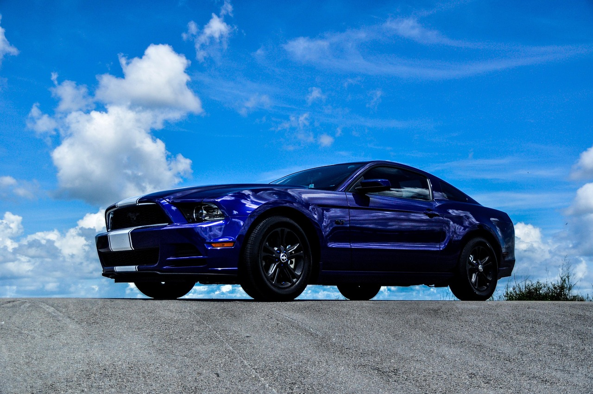

K-소부장 스텔란티스·GM 진입, 수출 실전 원년

한국 소부장 기업들이 스텔란티스·GM·포드 등 북미·유럽 완성차 OEM의 1차 협력사(Tier-1) 공급망에 진입하는 사례가 2024~2025년 사이 가시화됐다. 전장 소재·차량용 반도체 기판·배터리 소재 분야가 주요 진입 경로다.
2019년 일본 수출규제 이후 정부가 소부장 육성에 투입한 누적 예산은 약 4조원이다. 산업부는 2025년 지원 규모를 기존 대비 확대해 1700억원으로 늘리고, 대상을 차량용 반도체·이차전지·디스플레이·바이오 등 6개 첨단전략산업으로 특화했다.
글로벌 완성차 OEM은 중국산 부품 비중을 2025~2027년 단계적으로 축소하는 '디-차이나(De-China)' 조달 전략을 공식화했다. 스텔란티스는 중국산 전장 부품을 2027년까지 60% 이상 대체한다는 목표를 내부 조달 지침에 반영했으며, GM도 멕시코·한국·인도 공급처 다변화를 병행하고 있다.
호남 반도체 클러스터는 차량용 반도체 소재 특화 방향으로 전략을 확정했다. 전력반도체(SiC·GaN) 기판 소재와 ADAS용 센서 패키지 소재가 핵심 타깃이며, 광주·전남 지역 소부장 기업 중 완성차 OEM 스펙인(Spec-In) 심사를 통과한 곳이 2025년 기준 12개사를 넘어섰다.
소부장 정책의 1단계가 '국산화(수입대체)'였다면, 지금 진입한 2단계는 '글로벌 OEM 스펙인'이다. 스펙인은 단순 납품 계약과 다르다 — OEM 설계 단계부터 소재 사양이 확정되므로, 한 번 진입하면 교체 주기가 5~10년이다. 즉 지금 진입 여부가 2030년대 초반까지의 매출 기반을 결정한다.
미국 완성차의 중국 부품 퇴출 속도가 예상보다 빠르다. 중국산 전장 부품에 부과되는 관세가 2025년 기준 최대 100%에 달하면서 원가 경쟁력이 사실상 소멸됐다. 한국 소부장 기업 입장에서는 경쟁자가 스스로 퇴장하는 구조다. 문제는 생산능력(CAPA) 확보 속도가 OEM의 수요 전환 속도를 따라가지 못하고 있다는 점이다.
차량용 반도체 소재 기업: SiC 기판 소재를 공급하는 국내 기업(SKC 자회사 SK엔펄스 등)이 스텔란티스·GM 전력반도체 공급망에 편입되면, 단가 기준 연간 수주액이 기존 메모리 소재 대비 2~3배 높다. 전장 SiC 기판 글로벌 시장은 2025년 약 8억 달러에서 2030년 35억 달러로 성장이 예측된다.
호남 차량용 반도체 클러스터 입주 기업: 산업부 1700억원 지원 중 매칭 투자 50% 조건을 충족하는 중소·중견 기업은 실질 투자 부담을 절반으로 줄이면서 OEM 인증 비용(평균 2~5억원/모델)을 충당할 수 있다. 인증 완료 기업은 경쟁 진입 장벽이 높아져 가격 협상력도 동반 상승한다.
스펙인 심사 대기 중인 후발 소부장 기업: OEM이 공급처를 이원화(Dual Source)하더라도 1차 공급자 물량이 전체의 70~80%를 차지한다. 2025년 내 스펙인 심사를 통과하지 못하면 해당 모델 플랫폼(보통 5~7년 사이클)에서 사실상 배제된다. 심사 기간이 평균 18~24개월임을 감안하면, 지금 시작하지 않으면 2027년 공급망 고착화에 올라타지 못한다.
중국산 전장 부품에 의존하던 한국 완성차 2차 협력사: 현대차·기아 협력사 중 중국산 커넥터·PCB를 OEM 방식으로 재납품하던 기업들은 대체 소싱 비용 증가로 마진이 압박받고 있다. 부품 단가 상승분을 완성차에 전가하기 어려운 구조에서 원가 압박이 직격한다.
스텔란티스·GM 공급망 진입을 겨냥한 소부장 기업은 지금 당장 IATF 16949(자동차 품질 경영) 인증과 AEC-Q 시리즈(차량용 부품 신뢰성) 규격 대응을 병행해야 한다. OEM은 인증서 없이는 샘플 평가 자체를 수락하지 않는다. 인증 취득에 12~18개월이 필요하므로, 2027년 대량 납품을 목표로 하려면 2025년 4분기가 착수 마지노선이다.
산업부 1700억원 지원 사업의 실질 수혜는 '투자계획서 구체성'이 관건이다. 막연한 R&D 항목보다 OEM으로부터 받은 RFQ(견적요청서) 또는 LOI(의향서)를 첨부한 기업이 심사에서 우위를 점한다. 투자자 관점에서는 이 LOI 보유 여부가 기업 가치 판단의 선행 지표다.
실제 조달 현장에서는 — OEM 1차 협력사(Tier-1)가 한국 소부장 업체에 '소재 이력 추적(Traceability)' 문서를 요구하는 빈도가 2024년 대비 40% 이상 늘었다. 중국산 원자재가 한국 가공을 거쳐 우회 납품되는 것을 차단하려는 조치다. 원산지 증명과 소재 성분 분석서(CoA)를 실시간 디지털로 제출하는 체계를 갖추지 못한 기업은 현장 감사에서 탈락한다. 지금 이 문서화 인프라를 갖추는 것이 기술력 못지않게 중요하다.
이 포스팅은 쿠팡 파트너스 활동의 일환으로 수수료를 제공받습니다.